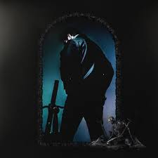

effettua upgrade
- in evidenza
- podcast
- classifiche
- generi e mood
- nuove uscite
- scopri
Recently played
Subtitle
Subtitle

Subtitle

Subtitle

Subtitle
Subtitle
Creato per Matteo
Più ascolti, più accurati saranno i suggerimenti.


Creato per Matteo
Più ascolti, più accurati saranno i suggerimenti.